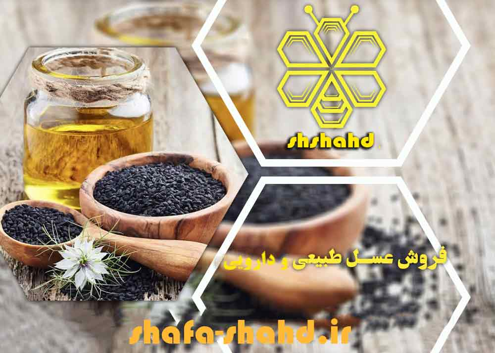

آرش اسدی کلمتی
..........................
شماره تماس ایرانسل
09309455654
شماره تماس همراه اول
09309455654
فروش عسل دارویی در
سلام عزیزان امیدوارم هرکجای که هستید موفق و پیروز باشید - بنده جناب آقای آرش اسدی کلمتی هستم و از آنجایی که شغل زنبور داری در خانواده ما موروثی بود و علاقه شدیدی به دنیای زنبورها داشتم بصورت تخصصی این رشته را از هشت سالگی شروع کردم و اکنون بالای 30 سال سابقه زنبور داری و تهیه عسل دارویی دارم. امیدوارم بتوانم عسل های دارویی خودمان را از رشته کوهای زاگرس به سفره شما عزیزان و هموطنان گرامی برسانم. عسل یکی از محصولات طبیعی شیرین و خوشمزه است که توسط زنبورها از گلها و گیاهان جمعآوری میشود. عسل به دلیل دارا بودن مواد مغذی مانند ویتامینها، مواد معدنی، آنتیاکسیدانها و آنزیمها، به عنوان یکی از محصولات خوراکی مفید شناخته شده است. همچنین، عسل به دلیل داشتن خواص ضد باکتری، ضد التهابی و ضد عفونی کننده، در بهبود سلامتی افراد مؤثر است. خواهشمندیم ابتدا برای مطالعه و اطلاعات بیشتر در مورد مجموعه شفا شهد کلیک کنیدبر روی:صفحه اصلی
خرید عسل شفا شهد در
کاملا طبیعی و خام تمامی عسلها به صورت خام و حرارت ندیده هستند. 5 روز ضمانت بازگشت ضمانت بازگشت کالا به مدت ۵ روز میتوانید عسل را مرجوع کنید. ارسال سریع و به موقع ارسال سریع در بازههای ۳ ساعته و در شهرستانها با پست پیشتاز برگه آزمایش تمامی عسلها دارای برگه آزمایش هستند که آزمایش و همچنین ضمانت بازگشت وجه هستند.

انتخاب عسل بر اساس خواص در
اگر قصد خرید عسل طبیعی و یا فرآوردههای دیگر زنبور عسل را دارید، میتوانید بسته به خواص هر یک و یا سلیقهی خودتان، محصول مورد نظر را سفارش دهید. عسل گشنیز:اشتهاآور، رفع سوء هاضمه، مسکن و آرامبخش، مفید برای اسپاسم ماهیچهای، مفید برای آفت دهان، تقویت کننده ماهیچههای قلب، موثر برای درمان تنگی نفس عسل کنار:تقویت پوست و مو، فعالکنندهی حافظه و رشد کودکان، از بین برنده کرم روده و معده، تقویت قوای جنسی، مفید برای گرم مزاجان عسل گون:مفید برای کم خونی، تقویت کننده معده، سودمند برای دردها و زخمهای چشمی، مفید برای درد کلیه و مثانه و مجاری اداری، مفید برای گرفتگی صدا عسل چهل گیاه:مفید برای درمان زخمها و جای آنها، موثر در درمان عفونتهای بدن، تقویت سیستم ایمنی بدن، موثر برای مشکلات گوارشی عسل نعناع: عسل نعناع، دارای خواص ضد التهابی، ضد باکتریایی و ضد افسردگی میباشد و میتواند به درمان سرماخوردگی، عفونتهای دستگاه تنفسی و دردهای مختلف، از جمله درد سر و درد گلو کمک کند. عسل کوهستان:بهبود آسمهای آلرژیک، موثر در درمان عفونتهای بدن، تصفیه کننده خون، بهبود مشکلات ناباروری در زنان عسل آویشن:مفید برای عادات ماهیانه دردناک، موثر در درمان عفونتهای بدن، درمان زخمها و جای آنها، موثر برای بهبود دردهای شکمی و سرفه و گلودرد عسل پونه: عسل پونه، دارای خواص ضد التهابی، ضد باکتریایی، ضد افسردگی و ضد اضطراب میباشد و میتواند به درمان سرماخوردگی، عفونتهای دستگاه تنفسی، درد عضلانی و درد مفاصل کمک کند. عسل لعل کوهستان:ضد قارچ، ضد باکتری و ضد ویروس، مفید برای ضدعفونی کردن معده و دستگاه گوارش، رفع دلپیچه، تسکین درد قائدگی عسل زعفران: عسل زعفران، دارای خواص ضد التهابی، ضد افسردگی، ضد اضطراب و ضد اختلالات خواب میباشد. همچنین، میتواند به بهبود عملکرد قلبی، تقویت سیستم ایمنی و بهبود عملکرد گوارش کمک کند. ژل رویال:ضد پیری، سلامت پوست و مو، درمان بیماریهای خاص، موثر در درمان ناباروری، ضد رماتیسم، تعدیل سیستم ایمنی بدن و ضد سرطان گرده گل:موثر در بهبود پروستات، ضد پوکی استخوان، مناسب برای رژیمها لاغری، مناسب جهت درمان سینوزیت، موثر در کاهش کلسترول
.jpg)
مزایای و خواص عسل دارویی شفا شهد
خواص درمانی عسل آنقدر زیاد است که اگر لازم باشد میتوان دربارهی آن کتاب نوشت؛ همانطور که ارسطو و ابن سینا در کتابهایشان از اعجاز این ماده سخن گفتهاند. برای مثال ابن سینا در کتاب قانون مینویسد:« عسل، زداینده است، دهانهی رگها را باز میکند، رطوبتها را از بین میبرد، رطوبتها را از ژرفای بدن بیرون میکشد، لکههای سیاه چهره را حتی اگر کهنه باشد از بین میبرد، زخمهای تازه را به هم آرد، نم چشم را از بین میبرد، اشتها برانگیزد، توان بخش معده است، عسل پخته بسیار تغذیه دهنده است و پادزهر افیونخوردگی و نیش حشرات موذی، سگهار و قارچ سمی است. کسی که سم خورده عسل بخورد قی میکند و اثر سم خنثی میشود.» عسل درمان خوبی برای انواع آلرژی و حساسیت است و در درمان بیماریهای ریوی و قلبی استفاده میشود. این مادهی درمانی برای درمان زخم بستر و گاها سم مار و حشرات هم استفاده میشود و مسکل خوبی برای التیام سوختگی و زخم است. شرکت شفا شهد، مجموعهای از عسلهای طبیعی با کیفیت بالا را تولید میکند. در زیر لیستی از برخی از انواع عسلهایی که این شرکت تولید میکند، آورده شده است: همچنین، شرکت شفا شهد علاوه بر اینها، عسل مخصوص فصل بهار، عسل مخصوص فصل تابستان و عسل مخصوص فصل پاییز را نیز تولید میکند. هرکدام از این عسلها دارای خواص و مزایای منحصر به فردی هستند که با توجه به نیاز و مصرف مشتریان، قابل استفاده هستند. عسل دارویی شفا شهد، به دلیل داشتن خواص طبیعی و مواد مغذی مفید، برای سلامتی بسیار مفید است. برخی از مزایای عسل دارویی شفا شهد به شرح زیر است: ۱. ضد باکتری و ضد التهاب: عسل دارویی شفا شهد، دارای خواص ضد باکتری و ضد التهابی قوی است که میتواند به درمان عفونتها و التهابهای مختلف، از جمله درد گلو، سینوزیت، التهاب معده و روده، آکنه و زخمهای پوستی کمک کند. ۲. تقویت سیستم ایمنی: مصرف عسل دارویی شفا شهد میتواند به تقویت سیستم ایمنی بدن کمک کند و در پیشگیری از بیماریهای مختلف نقش داشته باشد. ۳. تسکین درد: خواص ضد التهابی و ضد باکتری عسل دارویی شفا شهد، میتواند به تسکین دردهای مختلف، مانند درد گلو، درد عضلانی و درد مفاصل کمک کند. ۴. بهبود عملکرد گوارش: مصرف عسل دارویی شفا شهد، بهبود عملکرد گوارش را تحریک میکند و میتواند به درمان مشکلات مربوط به گوارش مانند فشار خون بالا، اسهال و یبوست کمک کند. ۵. ارتقای سلامتی پوست: خواص ضد التهابی عسل دارویی شفا شهد، به بهبود و آرامش پوست کمک میکند و میتواند به درمان مشکلات پوستی مانند آکنه، خشکی پوست و پیری زودرس کمک کند. بنابراین، عسل دارویی شفا شهد به دلیل داشتن خواص طبیعی و مواد مغذی مفید، میتواند به بهبود سلامتی و پیشگیری از بیماریهای مختلف کمک کند. همچنین، عسل زنبق، عسل بومادران، عسل گلهای بلوط، عسل پوپل و عسل چندگیاه نیز از دیگر انواع عسلهایی هستند که دارای خواص و مزایایی مانند خواص ضد التهابی، ضد باکتریایی، تقویت سیستم ایمنی، بهبود عملکرد گوارش و بهبود سلامتی پوست هستند.
محصولات مجموعه شفا شهد در کوه های زاگرس
به علاوه، مجموعه شفا شهد محصولات دیگری مانند ژل رویال، پره گرده، موم زنبور عسل و ... نیز در اختیار شما قرار میدهد. در مجموعه شفا شهد، میتوانید علاوه بر انواع عسل، محصولات دیگری نیز مانند موم زنبور عسل، ژل رویال، پره گرده، گلاب و انواع گیاهان دارویی را نیز پیدا کنید. این محصولات دارای خواص طبی فراوانی هستند و میتوانند به بهبود سلامتی شما کمک کنند. - موم زنبور عسل: موم زنبور عسل دارای خواص ضد التهابی، ضد قارچی و ضد باکتریایی است و به عنوان یک ماده طبیعی برای درمان بیماریهای پوستی و درد مفید است. - ژل رویال: ژل رویال یک ماده غنی و مغذی است که توسط زنبورهای شاه ساخته میشود. این ماده دارای خواص ضد التهابی، آنتیاکسیدانی و مفید برای بهبود عملکرد مغزی و حافظه است. - پره گرده: پره گرده یک ماده غنی و مغذی است که توسط زنبورها جمع آوری میشود. این ماده دارای خواص ضد التهابی، ضد بیماری و مفید برای سیستم ایمنی بدن است. - گلاب: گلاب یک آب گلهای خاص است که به دست آمده از تقطیر گل میباشد. گلاب دارای خواص ضد التهابی، ضد قارچی و آرامشبخش میباشد و برای بهبود مشکلات پوستی و رفع استرس مفید است. - گیاهان دارویی: مجموعه شفا شهد گیاهان دارویی مختلفی را شامل آویشن، آلوئه ورا، زعفران و... نیز در اختیار شما قرار میدهد. این گیاهان دارای خواص طبی فراوانی هستند و میتوانند به بهبود برخی بیماریها کمک کنند. ای عسل و بازارهای محلی برای خرید انواع مختلفی از عسل به دنبال بروید. همچنین، بسیاری از تولیدکنندگان عسل نیز محصولات خود را از طریق فروشگاههای آنلاین به فروش میرسانند. در کل، مجموعه شفا شهد محصولات طبیعی و سالمی را به شما ارائه میدهد که میتوانند به بهبود سلامتی شما کمک کنند.
خرید اینترنتی عسل:
امروزه بسیاری از خرید ها به صورت آنلاین انجام میگیرد. خرید عسل نیز از این قاعده مستثنا نیست. در صفحات اینترنتی فروشگاه های بسیاری در حال عرضه مواد غذایی هستند. کافیست عبارت خرید عسل طبیعی را سرچ کنید تا چندین فروشگاه اینترنتی برای شما نمایش داده شود. حال نکته اینجاست: کدام فروشگاه برای خرید قابل اعتماد است؟ چگونه می توانیم عسل طبیعی را از فروشگاه های اینترنتی خریداری نماییم؟ یکی از مهم ترین معضلات یا بهتر است بگوییم بزرگ ترین نکته هنگام خرید اینترنتی انواع عسل، اعتماد به فروشنده است. تا زمانی که اعتماد بین فروشنده کالا و مشتری برقرار نشود، خرید و فروشی صورت نخواهد گرفت. پس باید در قدم اول نسبت به فروشگاه اینترنتی اطمینان حاصل کنیم. اولین راهی که می تواند به ایجاد اطمینان بین شما و فروشگاه اینترنتی کمک کند، رضایت مشتریان آن فروشگاه است. پس سعی کنید از فروشگاهی خرید نمایید که دوستان و آشنایان تان از آن خرید کرده اند. با اطلاع از رضایت آن ها، اطمینان شما جلب خواهد شد و خرید مطمئنی خواهید داشت.
مزیت خرید اینترنتی عسل دارویی
از مهمترین مزیتهای خرید اینترنتی عسل از زنبوردار زاگرس این است که این تضمین برای شما وجود دارد که عسل طبیعیای به دستتان میرسد که صحت کیفیت آن در آزمایشگاه تایید شده است. همچنین از هر نقطه از کشور این امکان برای شما وجود دارد تا سفارش خود را ثبت و دریافت کنید. بستهبندی این عسلها نیز به نحوی است که علاوه بر مصرف شخصی، میتوانید از آن به عنوان یک هدیه متفاوت برای دوستان و آشنایان هم استفاده کنید.
راهنمای خرید عسل دارویی:
برای آنکه هنگام خرید عسل از محصولی که خریداری میکنید راضی باشید، باید به کیفیت آن دقت کنید. همانطور که در قسمت قبل نیز ذکر گردید، هنگام خرید اینترنتی عسل، روش هایی وجود دارد تا نوع طبیعی را شناسایی کرده و بهترین محصول را خریداری کنید. این نکته را نیز بدانید، کیفیت و قیمت عسل به عواملی مانند: تعداد کوچ های زنبوردار، فصل برداشت محصول، نوع بسته بندی، میزان تغذیه مصنوعی زنبور توسط زنبوردار، میزان برداشت در آن فصل و همچنین نتیجه آنالیز آزمایشگاهی عسل بستگی دارد. اطلاع از این عوامل به راحتی ممکن نیست، اما اگر هنگام خرید عسل، به زنبورداران مراجعه کنید و به صورت حضوری اقدام به خرید نمایید، می توانید از ویژگی های ذکر شده اطلاع حاصل کنید. ممکن است هنگام خرید رنگ آن را ملاک قرار دهید و از خریداری عسل هایی که رنگ تیره ای دارند خودداری کنید. اما این روش اصلا درست نیست. زیرا رنگ به هیچ عنوان نمی تواند نشانی بر خالص و طبیعی بودن این ماده طبیعی باشد. رنگ و طعم عسل به شهد گلی که از آن گرفته شده است، بستگی دارد. پس نمی توان قانون کلی تعیین نمود و نوع تیره رنگ را مصنوعی و یا غیر بهداشتی دانست. براساس شواهد و مقایسه ای که بین انواع عسل ها صورت گرفته است، عسل هایی که رنگ تیره دارند، طعم شان قوی تر بوده و عسل های با رنگ روشن، شیرینی شان ملایم تر است. از دیگر عواملی که رنگ این محصول را تحت تاثیر قرار می دهد، می توان به شیوه نگهداری آن اشاره کرد.
تشخیص عسل طبیعی:
همانطور که پیشتر ذکر گردید، عسل طبیعی که در بازار به فروش میرسد؛ زیر ۵ درصد قند دارد. برخی از فروشندگان نوع تقلبی را وارد بازار می کنند که به لحاظ ظاهری مانند عسل بوده ولی هیچ یک از خواص عسل را دارا نمی باشد. از دیگر مواردی که می تواند عسل طبیعی را مشخص نماید، موادی است که به زنبور های عسل تزریق می شود. گاهی زنبورداران برای درمان برخی بیماری ها، از آنتی بیوتیک برای زنبوران استفاده می کنند. مصرف این دارو براساس قوانین هر کشوری متفاوت است. در برخی کشور ها در صورتی که عسل حاوی آنتی بیوتیک باشد، طبیعی محسوب نمی شود. اما در برخی دیگر از کشور ها، مصرف میزان کمی از آنتی بیوتیک مجاز می باشد. تشخیص عسل طبیعی و شکری از یکدیگر بسیار مهم است، زیرا عسل شکری، ممکن است حاوی شکرهای اضافی و مواد شیمیایی باشد که ممکن است برای سلامتی مضر باشد. در زیر به برخی از روشهای تشخیص عسل طبیعی و شکری اشاره شده است: ۱. آزمایش آب: یکی از روشهای ساده برای تشخیص عسل طبیعی و شکری، آزمایش آب است. برای این کار، عسل را در آب حل کنید. اگر عسل طبیعی باشد، به راحتی در آب حل میشود و به صورت همگن در آب پخش میشود، در حالی که عسل شکری، در آب حل نمیشود و به صورت دانهدانههای ریز در آب باقی میماند. ۲. آزمایش موردانه: برای تشخیص عسل طبیعی و شکری، میتوانید از آزمایش موردانه استفاده کنید. برای این کار، یک قطره از عسل را روی کاغذ موردانه بریزید. اگر عسل طبیعی باشد، پس از خشک شدن، روی کاغذ خشک خواهد شد، در حالی که عسل شکری، پس از خشک شدن، روی کاغذ همچنان خواهد بود. ۳. آزمایش اسیدیته: برای تشخیص عسل طبیعی و شکری، میتوانید از آزمایش اسیدیته استفاده کنید. برای این کار، یک قطره از عسل را با اسید هیدروکلریک ترکیب کنید. اگر عسل طبیعی باشد، با ایجاد تعادل اسیدی- بازی، اسیدیته آن کمی جذب خواهد شد، در حالی که عسل شکری، به دلیل حاوی شکرهای اضافی، اسیدیته بیشتری دارد و بیشتر جذب خواهد شد. توجه داشته باشید که برای تشخیص عسل طبیعی و شکری به صورت قطعی، بهتر است از کارشناسان متخصص در این زمینه استفاده کنید.
عسل های شفا شهد چه ضمانتی دارند؟
شرکت شفا شهد عسل طبیعی خود را به خارج از ایران نیز صادر میکند. این شرکت با داشتن استانداردهای بین المللی کیفیت و بهداشتی، توانسته است بازارهای خارجی را نیز به خود اختصاص دهد و عسل طبیعی خود را به کشورهایی مانند انگلستان، آلمان، فرانسه، چین و... صادر کند. شفا شهد با توجه به جایگاه برجستهای که در صنعت تولید محصولات طبیعی دارد و با داشتن محصولات با کیفیت و با قیمت مناسب، توانسته است بازارهای خارجی را به خود جذب کند. همچنین، شرکت شفا شهد با رعایت استانداردهای بین المللی کیفیت و بهداشتی، تمامی محصولات خود را تولید و پخش میکند و به همین دلیل محصولات شفا شهد دارای استانداردهای بین المللی مانند HACCP و ISO 22000 هستند. در صورت هر گونه نارضایتی از عسل تست، امکان مرجوع کردن عسل بدون هیچ هزینه ای وجود دارد.
آیا عسل های شفا شهد دارای برگه آزمایش هستند؟
بله تمامی عسل های شفا شهد کاملا طبیعی بوده و دارای برگه آزمایش معتبر می باشند.